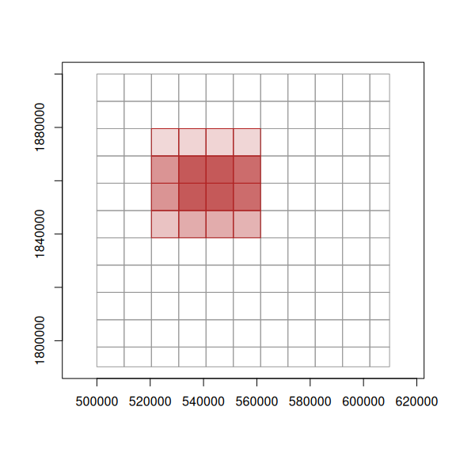

A DBI backend for xarray. The “database” is a live Python session (reticulate) holding an xarray object; the connection is a handle to that object.
- tables are variables (data variables and coordinates alike)
- fields are dimensions, then non-dimension coordinates, then the variable
- a statement is a Python expression evaluated with
dsandxrin scope -
dbSendQuery()is lazy for selections (nothing is read untildbFetch()renders the tidy long-form data frame); a statement that computes, such as.mean(), runs when sent -
tbl(con, var)gives a lazy dplyr table whose verbs compile to one Python statement - everything else is one step away via
xr_dataset(con)
This provides pixel-level rows on demand from anything xarray can open. The chunk-level relation (byte ranges, encoded blobs) is deliberately a different project.
Status
Loading xrdbi declares its core Python requirements with reticulate::py_require(): xarray and netCDF4. With no Python configured, reticulate provisions them on first use, nothing to install by hand. Each example below declares the IO engines it needs the same way; with your own Python (RETICULATE_PYTHON, a conda environment), install those there instead. The gdalxarray engine also needs the GDAL Python bindings, which pip cannot install: use conda or an image with GDAL. The gdal-r-python image (ghcr.io/hypertidy/gdal-r-python) is the reference environment, and this README is built live in it: every output below came from the remote data when it was last built. See ?xrdbi for the details.
Example: OISST NetCDF over HTTPS
library(DBI)
library(xrdbi)
## netCDF over HTTPS: h5netcdf reads it by byte ranges through fsspec
reticulate::py_require(c("h5netcdf", "h5py", "fsspec", "aiohttp"))
eg <- "https://www.ncei.noaa.gov/data/sea-surface-temperature-optimum-interpolation/v2.1/access/avhrr/198109/oisst-avhrr-v02r01.19810901.nc"
con <- dbConnect(xarray(), eg, engine = "h5netcdf")
dbListTables(con)
#> [1] "anom" "err" "ice" "sst" "lat" "lon" "time" "zlev"
dbListFields(con, "sst")
#> [1] "time" "zlev" "lat" "lon" "sst"
dbGetQuery(con, "ds.sst.sel(lat=slice(-56, -55), lon=slice(100, 101)).isel(time=0)") |>
head()
#> zlev lat lon time sst
#> 1 0 -55.875 100.125 1981-09-01 12:00:00 -0.06
#> 2 0 -55.875 100.375 1981-09-01 12:00:00 -0.14
#> 3 0 -55.875 100.625 1981-09-01 12:00:00 -0.17
#> 4 0 -55.875 100.875 1981-09-01 12:00:00 -0.11
#> 5 0 -55.625 100.125 1981-09-01 12:00:00 0.06
#> 6 0 -55.625 100.375 1981-09-01 12:00:00 0.00
dbDisconnect(con)Example: ARCO ERA5 (zarr v3, anonymous GCS)
reticulate::py_require(c("zarr", "gcsfs"))
era <- "gs://gcp-public-data-arco-era5/ar/full_37-1h-0p25deg-chunk-1.zarr-v3"
con <- dbConnect(xarray(),
era,
engine = "zarr",
storage_options = reticulate::dict(token = "anon"))
con
#> <XarrayConnection>
#> dsn: gs://gcp-public-data-arco-era5/ar/full_37-1h-0p25deg-chunk-1.zarr-v3
#> dims: time: 1323648, latitude: 721, longitude: 1440, level: 37
#> vars: 100m_u_component_of_wind, 100m_v_component_of_wind, ... (273 total)
## tables are all variables, coordinates included; data variables are
## the arrays proper (273 here, as the print above counts)
str(dbListTables(con))
#> chr [1:277] "100m_u_component_of_wind" "100m_v_component_of_wind" ...
dbListFields(con, "100m_u_component_of_wind")
#> [1] "time" "latitude"
#> [3] "longitude" "100m_u_component_of_wind"
## dataset attributes are one expression away
dbGetQuery(con, "ds.attrs['valid_time_start']")
#> value
#> 1 1940-01-01Label-based slice follows the order of the coordinate, and ERA5 latitude runs descending (90 down to -90). So this selects the empty interval and returns zero rows, with a hint:
dbGetQuery(con,
"ds['100m_u_component_of_wind'].sel(latitude=slice(18, 19), longitude=slice(73, 74), time='1980-01-01')")
#> xrdbi: 'latitude' selected nothing: this coordinate is DESCENDING (90.0 .. -90.0) and label slices follow coordinate order; try slice(hi, lo)
#> [1] time latitude longitude
#> [4] 100m_u_component_of_wind
#> <0 rows> (or 0-length row.names)Inspect the coordinate (coordinates are tables too), then slice in its order:
dbGetQuery(con, "ds.latitude.isel(latitude=slice(0, 5))")
#> latitude
#> 1 90.00
#> 2 89.75
#> 3 89.50
#> 4 89.25
#> 5 89.00
u <- dbGetQuery(con,
"ds['100m_u_component_of_wind'].sel(latitude=slice(19, 18), longitude=slice(73, 74), time='1980-01-01')")
dim(u)
#> [1] 600 4
head(u)
#> time latitude longitude 100m_u_component_of_wind
#> 1 1980-01-01 19.00 73.00 -0.5576082
#> 2 1980-01-01 19.00 73.25 -0.2125518
#> 3 1980-01-01 19.00 73.50 0.8037959
#> 4 1980-01-01 19.00 73.75 2.3964324
#> 5 1980-01-01 19.00 74.00 3.7569399
#> 6 1980-01-01 18.75 73.00 -0.2851481Longitude here is 0..360 ascending, so slice(73, 74) is fine as-is. A quoted date string on time selects the whole day.
Note on chunks: omitting it (Python chunks=None for open_dataset) gives lazily indexed backend arrays and a fast connection. Passing chunks = reticulate::dict() (Python chunks={}) wraps every variable in dask at native storage chunking; for finely-chunked stores this can cost minutes of task-graph construction at connect time (this ERA5 store is 1 timestep per chunk, times 273 data variables). Selection via sel/isel is lazy either way and reads only the chunks a slab touches, so prefer no dask for extraction, and opt in per statement for reductions, rechunking to something sane:
dbGetQuery(con,
"ds['2m_temperature'].chunk({'time': 744}).sel(latitude=slice(19, 18), longitude=slice(73, 74)).mean('time')")Beware that the default differs by open function: open_dataset defaults to chunks=None (no dask), open_zarr defaults to chunks='auto' (dask). If you connect with open = "open_zarr", pass chunks = reticulate::py_none() explicitly to get the fast path.
dplyr
tbl(con, var) is lazy: verbs accumulate, no data are read until collect() (or a print, which shows a small preview), and show_query() prints the one statement that will run. Filters on dimensions push down to .sel(), oriented to the coordinate’s direction, so the descending-latitude gotcha above dissolves. Strict bounds keep the inclusive .sel() range and trim its boundary with a boolean .isel(), so the statement stays an xarray selection:
library(dplyr, warn.conflicts = FALSE)
u10 <- tbl(con, "100m_u_component_of_wind") |>
filter(latitude > 18, latitude < 19, longitude >= 73, longitude <= 74,
time >= as.POSIXct("1980-01-01", tz = "UTC"),
time < as.POSIXct("1980-01-02", tz = "UTC"))
show_query(u10)
#> ds['100m_u_component_of_wind'].sel(latitude=slice(19, 18), longitude=slice(73, 74), time=slice('1980-01-01T00:00:00', '1980-01-02T00:00:00')).pipe(lambda a: a.isel(latitude=(a.indexes['latitude'] > 18) & (a.indexes['latitude'] < 19), time=(a.indexes['time'] < '1980-01-02T00:00:00')))
collect(u10)
#> # A tibble: 360 × 4
#> time latitude longitude `100m_u_component_of_wind`
#> <dttm> <dbl> <dbl> <dbl>
#> 1 1980-01-01 00:00:00 18.75 73 -0.28515
#> 2 1980-01-01 00:00:00 18.75 73.25 -0.035991
#> 3 1980-01-01 00:00:00 18.75 73.5 1.0485
#> 4 1980-01-01 00:00:00 18.75 73.75 2.7908
#> 5 1980-01-01 00:00:00 18.75 74 3.9434
#> 6 1980-01-01 00:00:00 18.5 73 -0.026132
#> 7 1980-01-01 00:00:00 18.5 73.25 -0.19911
#> 8 1980-01-01 00:00:00 18.5 73.5 0.72313
#> 9 1980-01-01 00:00:00 18.5 73.75 2.6671
#> 10 1980-01-01 00:00:00 18.5 74 4.0419
#> # ℹ 350 more rowshead() and select() apply in R to the fetched rows, and head(n) first narrows the selection to the leading block that holds those n rows, so a peek at a 1.3-million-step variable reads one chunk (the store’s time axis starts in 1900, its data in 1940). Printing a tbl shows the same kind of lazy preview:
t2m <- tbl(con, "2m_temperature") |>
filter(time >= as.POSIXct("1980-01-01", tz = "UTC"))
t2m |> select(time, latitude, `2m_temperature`) |> head(3) |> show_query()
#> ds['2m_temperature'].sel(time=slice('1980-01-01T00:00:00', None)).isel(time=slice(0, 1), latitude=slice(0, 1), longitude=slice(0, 3))
#> # then in R: head(3) |> select(time, latitude, `2m_temperature`)
t2m |> select(time, latitude, `2m_temperature`) |> head(3) |> collect()
#> # A tibble: 3 × 3
#> time latitude `2m_temperature`
#> <dttm> <dbl> <dbl>
#> 1 1980-01-01 00:00:00 90 247.92
#> 2 1980-01-01 00:00:00 90 247.92
#> 3 1980-01-01 00:00:00 90 247.92
t2m |> filter(latitude < 60)
#> <tbl_xarray> 2m_temperature
#> python: ds['2m_temperature'].sel(latitude=slice(60, None), time=slice('1980-01-01T00:00:00', None)).pipe(lambda a: a.isel(latitude=(a.indexes['latitude'] < 60)))
#> sizes : time: 622,392, latitude: 601, longitude: 1,440
#> # A tibble: 6 × 4
#> time latitude longitude `2m_temperature`
#> <dttm> <dbl> <dbl> <dbl>
#> 1 1980-01-01 00:00:00 59.75 0 275.68
#> 2 1980-01-01 00:00:00 59.75 0.25 275.84
#> 3 1980-01-01 00:00:00 59.75 0.5 275.98
#> 4 1980-01-01 00:00:00 59.75 0.75 275.96
#> 5 1980-01-01 00:00:00 59.75 1 275.91
#> 6 1980-01-01 00:00:00 59.75 1.25 275.89
#> # lazy preview of the first cells (reads at most one chunk); collect() for the full result
dbDisconnect(con)Filters on data values (filter(`2m_temperature` > 300)) need a pandas .query() after rendering, so head() and select() then run in pandas too; show_query() makes the split visible.
Example: OISST daily mosaic via GDAL multidim VRT (gdalxarray engine)
Requires gdalxarray and the GDAL Python bindings (conda-forge gdal, or an image with GDAL; pip alone cannot provide them). The dsn is a GDAL multidim VRT mosaic over the full OISST daily record, published by a scheduled pipeline; xarray opens it through the gdalxarray backend, so every GDAL virtual filesystem and format is in reach of the same DBI surface.
dsn <- "/vsicurl/https://projects.pawsey.org.au/aad-index/oisst/oisst-mdim.vrt"
Sys.setenv(AWS_NO_SIGN_REQUEST = "YES")
system.time({
con <- dbConnect(xarray(), dsn, engine = "gdalxarray")
})
#> user system elapsed
#> 0.715 0.152 2.323
con
#> <XarrayConnection>
#> dsn: /vsicurl/https://projects.pawsey.org.au/aad-index/oisst/oisst-mdim.vrt
#> dims: time: 16492, zlev: 1, lat: 720, lon: 1440
#> vars: anom, err, ice, sst
## the most recent day in the record (a 0-d scalar renders as one row)
dbGetQuery(con, "ds.time.isel(time=-1)")
#> time
#> 1 2026-10-26 12:00:00
## one day of SST as tidy rows
dbGetQuery(con, "ds.sst.isel(time=-1)") |> str()
#> 'data.frame': 1036800 obs. of 5 variables:
#> $ zlev: num 0 0 0 0 0 0 0 0 0 0 ...
#> $ lat : num -89.9 -89.9 -89.9 -89.9 -89.9 ...
#> $ lon : num 0.125 0.375 0.625 0.875 1.125 ...
#> $ time: POSIXct, format: "2026-10-26 12:00:00" "2026-10-26 12:00:00" ...
#> $ sst : num NaN NaN NaN NaN NaN NaN NaN NaN NaN NaN ...Two lessons this dsn teaches:
Laziness defers failure as well as work. The VRT itself is public over /vsicurl, but its sources are /vsis3 paths into the NOAA bucket, so a missing AWS_NO_SIGN_REQUEST errors at the first query, not at connect (connect reads only the VRT metadata). GDAL reads configuration from the process environment at access time, so Sys.setenv() works even after the Python session is up; setting it before connecting is still the tidy habit.
A connection is a snapshot. The pipeline behind this VRT publishes a new day on schedule (it did so mid-session while writing this example: a held connection kept answering with the previous day, a fresh connect saw the new one). The rolling oisst-mdim.vrt always means “latest”; pin a dated sibling (oisst-mdim-YYYYMMDD.vrt) when you need a reproducible record. Icechunk makes this distinction first-class: a readonly session at a snapshot is an AS OF query.
Chunk maps
xr_chunks() maps a variable’s storage chunks, or the chunks a selection touches, as a table: each chunk’s index range and coordinate extent along every dimension, how many of its cells the selection reads, and a rectangle over the two spatial dimensions with the CRS. Only coordinates are read. (The geometry column needs the R package wk.) Chunk shapes come from what the backend records (zarr, netCDF, GDAL blocks via gdalxarray); level = "shards" maps the shards of a sharded zarr v3 array, and curvilinear grids get the envelope of each chunk’s 2-D longitude/latitude.
A Sentinel-2 true-colour Cloud-Optimized GeoTIFF, one 10980 x 10980 UTM tile in 1024 x 1024 blocks, through gdalxarray (so, like the VRT above, it needs the GDAL Python bindings):
tci <- "/vsicurl/https://sentinel-cogs.s3.us-west-2.amazonaws.com/sentinel-s2-l2a-cogs/36/Q/WD/2020/7/S2A_36QWD_20200701_0_L2A/TCI.tif"
## multidim = FALSE opens it as a classic raster: one variable, band_data,
## over (band, y, x)
cog <- dbConnect(xarray(), tci, engine = "gdalxarray", multidim = FALSE)
blocks <- xr_chunks(cog, "ds.band_data.isel(band=0)")
nrow(blocks)
#> [1] 121
table(blocks$cells)
#>
#> 547600 757760 1048576
#> 1 20 100
## a window: which blocks does reading it touch, and how much of each?
win <- xr_chunks(cog,
"ds.band_data.isel(band=0, y=slice(3000, 5500), x=slice(2500, 6000))")
win[, c("y_chunk", "x_chunk", "y_start", "y_stop", "x_start", "x_stop",
"cells", "selected")] |> head()
#> y_chunk x_chunk y_start y_stop x_start x_stop cells selected
#> 1 2 2 2048 3072 2048 3072 1048576 41184
#> 2 2 3 2048 3072 3072 4096 1048576 73728
#> 3 2 4 2048 3072 4096 5120 1048576 73728
#> 4 2 5 2048 3072 5120 6144 1048576 63360
#> 5 3 2 3072 4096 2048 3072 1048576 585728
#> 6 3 3 3072 4096 3072 4096 1048576 1048576
nrow(win)
#> [1] 16
## the share of the cells in the touched blocks that the window uses
sum(win$selected) / sum(win$cells)
#> [1] 0.5215406
used <- win$selected / win$cells
plot(blocks$geometry, border = "grey60")
plot(win$geometry, add = TRUE, border = "firebrick",
col = rgb(178, 34, 34, alpha = 255 * (0.15 + 0.6 * used),
maxColorValue = 255))
dbDisconnect(cog)The touched blocks are shaded by how much of each the window uses: the interior blocks are read whole, the edge blocks partly.
Connect forms
Exactly one of dsn, builder, object.
A string that xarray can open (as above), with the open function selectable via open = (“open_dataset” default, also “open_zarr”, “open_mfdataset”, “open_datatree”) and keyword arguments passed through.
A builder function, for anything that takes more than one call (icechunk sessions, virtualizarr, combining sources):
con <- dbConnect(xarray(), builder = function(xr) {
ic <- reticulate::import("icechunk", convert = FALSE)
repo <- ic$Repository$open(ic$s3_storage(
bucket = "aad-index", prefix = "rema-v2",
region = "ap-southeast-2", anonymous = TRUE))
session <- repo$readonly_session("main")
xr$open_zarr(session$store, consolidated = FALSE)
})Adopt an object already built in the session:
reticulate::py_run_string(paste(
"import xarray, numpy",
"myds = xarray.Dataset({'v': (('y', 'x'), numpy.arange(6.).reshape(2, 3))},",
" coords={'y': [10, 20], 'x': [1, 2, 3]})",
sep = "\n"))
obj <- dbConnect(xarray(), object = reticulate::py_eval("myds", convert = FALSE))
dbGetQuery(obj, "ds")
#> y x v
#> 1 10 1 0
#> 2 10 2 1
#> 3 10 3 2
#> 4 20 1 3
#> 5 20 2 4
#> 6 20 3 5
dbDisconnect(obj)Verbs and semantics
Continuing with the OISST VRT connection:
## structured spec compiles to the same python string (inspect it, log it)
q <- xr_query(vars = "sst",
sel = list(lat = c(-56, -55), lon = c(100, 101)),
isel = list(time = 0))
q
#> [1] "ds['sst'].sel(lat=slice(-56, -55), lon=slice(100, 101)).isel(time=0)"
dbGetQuery(con, q) |> head(3)
#> zlev lat lon time sst
#> 1 0 -55.875 100.125 1981-09-01 12:00:00 -0.06
#> 2 0 -55.875 100.375 1981-09-01 12:00:00 -0.14
#> 3 0 -55.875 100.625 1981-09-01 12:00:00 -0.17
## lazy send, paginated fetch
res <- dbSendQuery(con, "ds.sst.isel(time=0)")
dbFetch(res, n = 3)
#> zlev lat lon time sst
#> 1 0 -89.875 0.125 1981-09-01 12:00:00 NaN
#> 2 0 -89.875 0.375 1981-09-01 12:00:00 NaN
#> 3 0 -89.875 0.625 1981-09-01 12:00:00 NaN
dbFetch(res, n = 3)
#> zlev lat lon time sst
#> 1 0 -89.875 0.875 1981-09-01 12:00:00 NaN
#> 2 0 -89.875 1.125 1981-09-01 12:00:00 NaN
#> 3 0 -89.875 1.375 1981-09-01 12:00:00 NaN
dbClearResult(res)
## whole-variable reads are guarded against accidental terabyte renderings;
## move the line with options(xrdbi.max_cells = ), or pass force = TRUE
try(dbReadTable(con, "sst"))
#> Error : materializing 17,098,905,600 cells exceeds the guard (10,000,000); subset first, raise options(xrdbi.max_cells=), or use force = TRUE
## drop down whenever the veneer is in the way
ds <- xr_dataset(con)
str(reticulate::py_to_r(ds$sst$attrs))
#> List of 3
#> $ long_name: chr "Daily sea surface temperature"
#> $ valid_max: int 4500
#> $ valid_min: int -300A result renders as the tidy long form, exactly as xarray’s to_dataframe().reset_index() would give it: one row per cell, every coordinate as a column (including scalars like zlev and N-D coordinates, broadcast), in C order over the dimensions. xrdbi builds it in R: only the values cross from Python, and the coordinate columns are repeated with rep(), so ten million rows arrive in about half a second and dbFetch(n = ) builds only the rows asked for. Types arrive as R types: datetimes as POSIXct tagged UTC (or their own zone, if they have one), timedeltas as difftime, strings, bytes and non-standard calendar dates (cftime) as character, categoricals as factors, and geometry (the geometry coordinate of an xvec vector data cube) as wk::wkb carrying its CRS. Missing times and nullable integers arrive as NA; floating point gaps stay NaN. A coordinate renders as a single column of its values; a 0-d result as one row, a data variable with its scalar coordinates. The array is a rendering format; so is the data frame.
Note isel in xr_query() uses zero-based Python indices: the function interpolates values into Python source and does not translate. The compiled expression is the contract.
dbBegin/dbCommit/dbRollback error for now; the intended mapping is icechunk sessions and commits (a readonly session at a snapshot is literally an AS OF query).
Not yet
-
summarise()to xarray reductions in the dplyr layer - chunk-aligned streaming fetch:
dbFetch(n = )builds only the rows asked for, but the values of the whole selection are read at the first fetch - DataTree groups as schemas (open = “open_datatree” already connects, but the table listing assumes a flat Dataset)
- write support (dbWriteTable as to_zarr / icechunk commit)
- registry integration:
dbConnect(xarray(), sds::dsn("oisst"))where the registry row carries the open function and kwargs - a coords on/off toggle for renderings (n-D coordinates broadcast into every row of a data variable, which is faithful but can be heavy)